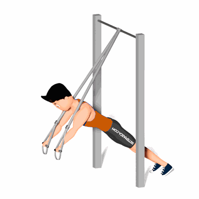

Supino no TRX

Esse exercício tem como objetivo o fortalecimento dos músculos do peitoral, tríceps e ombros.
Ficha Técnica
Tipo: Funcional
Grupo Muscular: Peito
Aparelho: Nenhum
Músculos: Nenhum
Como realizar
- De costas para as fitas, agarre as fitas com as mãos e leve os braços estendidos para frente, como em uma diagonal;
- Dobre os cotovelos até deixar as mãos na linha do tórax;
- Volte os braços à posição inicial e repita os movimentos.
 RC STORE
RC STORE